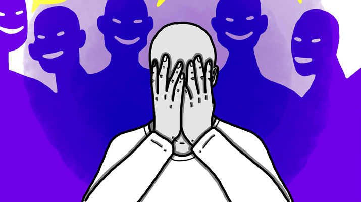
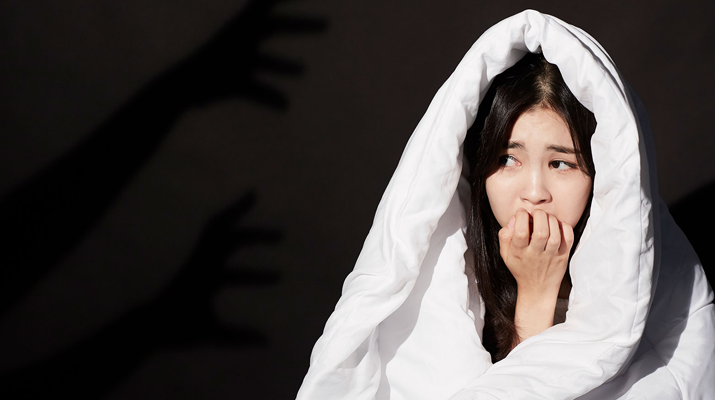

'걱정을 해서 걱정이 없어지면 걱정이 없겠네'라는 티베트의 속담처럼 우리의 현대사회는 불안 사회라고 할 수 있다. 그렇게 되다 보니 머릿속에는 걱정으로 가득 차게 되고, 몸과 마음에는 병을 유발하게 된다. 그에 따른 불면증이나 번아웃증후군도 같은 이유일 것이다. 마음을 챙겨야 하는 요즘, 불안장애의 모든 것을 알아보도록 하겠다.
글 :) 히스토리 홈페이지 'NEWSLETTER', 네이버 블로그 '오스틴랩', 네이버 포스트 '비주얼다이브' 사진 :) google 이미지불안장애라는 것은 이유도 없이 불안해지거나 불안의 정도가 지나쳐버린 정신질환을 의미한다. 불안은 위험이나 낯선 환경에 적응하게 되는 과정에 있어 생기는 인간의 자연스러운 반응 중 하나라고 할 수 있다. 원래 불안과 공포는 위험한 상황에 대비하기 위한 경고이다. 생존을 위해선 누구나 느낄 수도 있는 감정이지만, 불안과 공포심이 지나치게 되면 일상생활 속에서 여러 가지 신체적, 정신적인 고통을 겪게 되면서 삶의 질 또한 떨어질 수 있기 때문이라고 알려져 있다. 과도하게 통제가 안 되거나 외부 자극이 없이 발생하게 되는 경우, 신체적 증상과 정서적 증상을 유발하며, 행동과 인지 기능에 변화를 불러일으킬 경우에 불안장애 증상이라고 볼 수가 있다.
폐쇄공포증이라고 하는 것은 닫혀 있는 공간에 있는 것을 두려워하는 증상이다. 엘리베이터 안이나 비행기, 터널 등 닫히거나 밀폐된 공간에 있으면 두려움을 느끼게 되며, 불안감을 호소하게 되는 증상이다. 심할 경우엔 공황 발작이 생길 수도 있다. 폐쇄공포증은 심리적 요인에 의해 생길 수도 있다. 어린 시절에 크게 놀랄 일이 있었다거나 무의식적으로 갈등을 겪었던 경험, 지속적으로 이어진 환경적인 스트레스가 원인이 될 수 있다.
사회 불안장애 증상은 다른 사람들 앞에서 당황할 것 같은 사회적인 불안과 두려움을 겪은 다음, 다양한 사회적인 상황을 회피하는 불안장애의 종류 중 하나이다. 사회 불안장애가 생기게 되는 경우, 손을 떨거나 말을 더듬고 심장 박동이 빠르게 뛰는 증상을 보인다. 또한, 이는 사회 공포증이라고도 불리며, 발생 원인으로는 유전적 원인과 환경적 원인이 복합적으로 작용하여 생기는 불안장애의 일종이다.
공황장애는 스트레스를 극심하게 받는 사람들에게 많이 생기기 때문에 스트레스성 공황장애라고도 불린다. 어떠한 특별한 이유 없이 갑작스레 심한 공포나 불안장애 증상이 몇 분 동안 극도에 달하게 되며 호흡곤란이나 심장이 빨리 뛰게 되고, 극심한 불안과 두려움 등 공황 발작 증상이 생긴다고 알려져 있다. 이러한 증상의 원인으로는 신체적인 이유나 스트레스, 특정한 경험에 의해서 생길 수 있다. 특히, 어린 시절의 경험이나 그에 따른 인격의 발달이 함께 작용하여 생기는 경향이 있다. 공황장애로 인해서 생기는 발작의 경우, 보통 짧은 시간 동안에 일어나는데, 대부분 몇 분 안에 사라진다고 알려져 있다. 초기에 치료하게 되면, 70~90%의 경우엔 치료가 가능하지만, 그냥 방치하게 되면 우울증이나 사회 공포증 등으로 이어져서 치료가 더 어려워질 수 있다.
불안장애 종류 중 하나라고 할 수 있는 범불안장애는 일상생활 속에서 과도하게 걱정하거나 불안감을 느끼면서 지장을 받게 되는 질환이다. 사소하면서 일상적인 일에 대해서 과도한 불안감과 걱정이 장기간 지속되고 이를 통제하기가 어려워지며 불안과 연관된 다양한 신체 증상인 불면, 근 긴장도 증가 등이 흔하게 동반된다. 이러한 신체 증상 이외에도 특별한 원인이 없이 막연하게 불안감을 느끼거나 매사에 지나친 걱정, 불안장애 증상이 6개월 이상 지속될 경우 의심해 볼 수 있다.
첫째, 수면 습관을 올바르게 개선해 주어야 한다. 잠을 불규칙하게 자거나 적게 자는 습관은 뇌에 여러 가지 영향을 끼쳐 불안과 우울과 같은 부정적인 감정을 느끼게 될 가능성이 높아진다. 그러므로 동일한 시간대에 자고
4일어나며 적절하게 잠을 자는 것이 불안장애의 증상을 극복하는 데에 도움이 된다.
둘째로는 규칙적인 운동을 해주는 것인데, 이는 불안장애를 극복하는 데에 도움이 된다. 몸을 움직이고 활동량을 늘려줄 경우, 우리 몸의 스트레스 호르몬이 감소하게 되며, 불안감과 공포감이 줄어들 수 있다고 알려져 있다.
또한, 운동을 통해서 규칙적으로 생활하는 데에도 도움이 된다.
01. 별다른 이유 없이 항상 불안함
02. 걱정이 끊이지 않아 밤에 잠을 못 이룸
03. 조금만 일을 해도 쉽게 피로해짐
04. 가끔 몸이 저리거나 감각이 마비된 느낌을 받음
05. 평소 긴장을 많이 하여 어깨 통증이 항상 있음
06. 다한증처럼 손에 땀이 많이 남
07. 소화가 잘 안되고 뱃속이 불편함
08. 작은 일에도 깜짝 놀라는 경우가 많음
09. 벼랑 끝에 선 기분이 들 때가 있음
10. 가끔 머릿속이 하얘짐
3개 이하 : 일반적인 수준 / 5개 이상 : 불안장애 초기 / 9개 이상 : 심한 불안장애